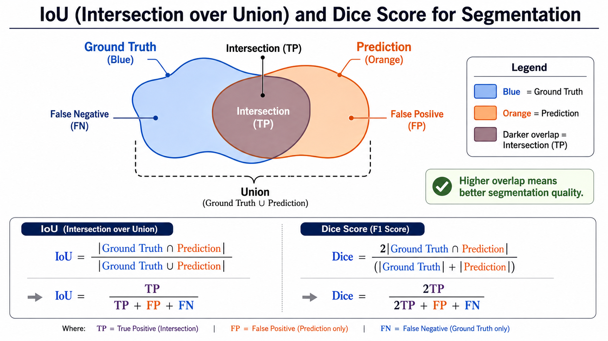

IoU Formula
Intersection over Union measures how much a predicted mask overlaps with the ground-truth mask relative to their combined area.

Dice Score Formula
Dice score doubles the overlap and divides it by the total predicted and ground-truth area. It is common when foreground regions are small.
Pixel Accuracy
Pixel accuracy measures the fraction of correctly classified pixels. It is easy to understand but can be misleading when the background dominates the image.
Mean IoU
Mean IoU computes IoU for each class and averages across classes. It is more robust than raw pixel accuracy for multiclass semantic segmentation.
Mask AP
Mask Average Precision evaluates instance segmentation by ranking predicted masks by confidence and checking whether they match ground-truth instances at different IoU thresholds.
Panoptic Quality
Panoptic Quality combines segmentation quality and recognition quality. It is used when the output must cover both stuff regions and thing instances.
Metric Comparison
| Metric | Used for | Strength | Limitation |
|---|---|---|---|
| IoU | Semantic and instance masks | Penalizes false positives and false negatives | Can be harsh for tiny objects or boundary uncertainty |
| Dice Score | Medical and binary segmentation | Helpful for imbalanced foreground regions | Less intuitive for multi-instance evaluation |
| Pixel Accuracy | Semantic segmentation | Simple and easy to explain | Inflated by large background classes |
| Mean IoU | Multiclass semantic segmentation | Balances class-wise performance | Rare classes can create unstable estimates |
| Mask AP | Instance segmentation | Evaluates ranking and mask quality together | More complex to compute and explain |
| Panoptic Quality | Panoptic segmentation | Combines recognition and overlap quality | Requires careful segment matching and panoptic labels |